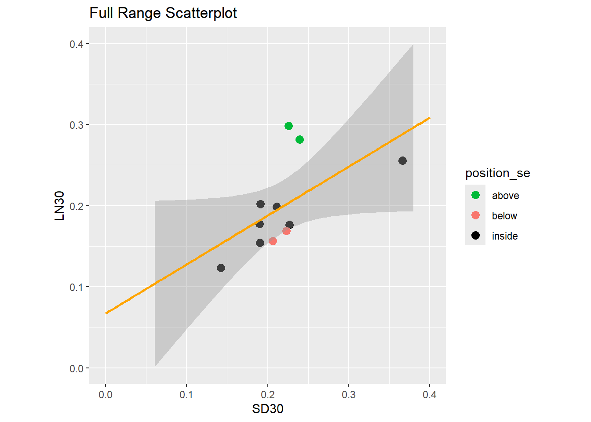
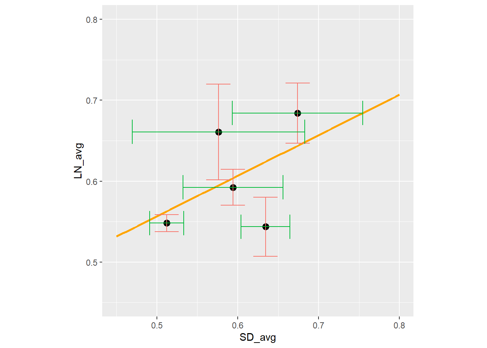
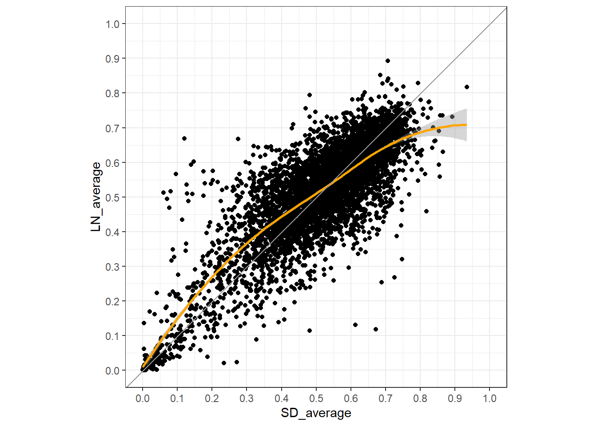

df_box %>%
ggplot(aes(x=SD30, y=SD37))+
geom_point()+
geom_smooth(method = "lm", se = TRUE)`geom_smooth()` using formula = 'y ~ x'
#Libraries
##Small Scatter
df_box %>%
ggplot(aes(x=SD30, y=SD37))+
geom_point()+
geom_smooth(method = "lm", se = TRUE)`geom_smooth()` using formula = 'y ~ x'
df_scatter %>%
ggplot(aes(x=SD_average,y=LN_average))+
geom_point()+
geom_smooth(method="lm",se=TRUE)+
scale_x_continuous(breaks=c(0, 0.25, 0.5, 0.75, 1), limits = c(0,.95))+
scale_y_continuous(breaks=c(0,0.25,0.5,0.75, 1), limits=c(0,.95))`geom_smooth()` using formula = 'y ~ x'
df_box %>%
ggplot(aes(x = SD30, y=LN30))+
geom_point()+
geom_smooth(method = "lm", se = TRUE, fill = "blue")`geom_smooth()` using formula = 'y ~ x'
###Line Color
df_box %>%
ggplot(aes(x=SD30, y=LN30))+
geom_point()+
geom_smooth(method = "lm", se = TRUE, color = "black")`geom_smooth()` using formula = 'y ~ x'
###Points Outside SE Band
df_scatter_small <- df_box
p <- df_scatter_small %>%
ggplot(aes(x = SD30, y = LN30)) +
geom_point() +
geom_smooth(method = "lm", se = TRUE)
built_data <- ggplot_build(p)`geom_smooth()` using formula = 'y ~ x'smooth_data <- built_data$data[[2]]
df_scatter_small$ymin_smooth <- approx(smooth_data$x, smooth_data$ymin, xout = df_scatter_small$SD30)$y
df_scatter_small$ymax_smooth <- approx(smooth_data$x, smooth_data$ymax, xout = df_scatter_small$SD30)$y
df_scatter_small <- df_scatter_small %>%
mutate(
position_se = case_when(
LN30 > ymax_smooth ~ "above",
LN30 < ymin_smooth ~ "below",
TRUE ~ "inside"))df_scatter_small %>%
ggplot(aes(x = SD30, y = LN30)) +
geom_point(aes(color = position_se), size = 3)+
geom_smooth(method = "lm", se = TRUE, level = 0.95, color = "orange")+
scale_color_manual(values=c("above" = "#00BA38", "below" = "#F8766D", "inside" = "black"))+
scale_x_continuous(limits = c(0.1, 0.4), breaks = c(0.1, 0.2,0.3, 0.4))+
coord_equal(ratio = 1)`geom_smooth()` using formula = 'y ~ x'
df_scatter_small_lab<- df_scatter_small %>%
filter(position_se == "above" |position_se == "below") %>%
mutate(outlier_label = paste0(ver_pos))
df_scatter_small %>%
ggplot(aes(x = SD30, y = LN30)) +
geom_point(aes(color = position_se), size = 3)+
geom_smooth(method = "lm", se = TRUE, level = 0.95, color = "orange")+
scale_color_manual(values=c("above" = "#00BA38", "below" = "#F8766D", "inside" = "black"))+
scale_x_continuous(limits = c(0.1, 0.4), breaks = c(0.1, 0.2,0.3, 0.4))+
coord_equal(ratio = 1)+
geom_text(data = df_scatter_small_lab,
aes(x = SD30, y = LN30, label = outlier_label),
color = "black",
vjust = -1,
size = 3,
stroke = 4)Warning in geom_text(data = df_scatter_small_lab, aes(x = SD30, y = LN30, :
Ignoring unknown parameters: `stroke``geom_smooth()` using formula = 'y ~ x'
##Expanding a Scatter Line
df_scatter_small %>%
ggplot(aes(x = SD30, y = LN30)) +
geom_point(aes(color = position_se), size = 3)+
geom_smooth(method = "lm", se = TRUE, level = 0.95, color = "orange", fullrange = TRUE)+
scale_color_manual(values=c("above" = "#00BA38", "below" = "#F8766D", "inside" = "black"))+
scale_x_continuous(limits = c(0.0, 0.4), breaks = c(0.0,0.1, 0.2,0.3, 0.4))+
scale_y_continuous(limits = c(0.0, 0.4), breaks = c(0.0,0.1, 0.2,0.3, 0.4))+
labs(title = "Full Range Scatterplot")+
coord_equal(ratio = 1)`geom_smooth()` using formula = 'y ~ x'
df_scatter_outlier_removal <- df_scatter %>%
pivot_longer(cols = 4:15,
names_to = "conditions",
values_to = "abs")
df_scatter_outlier_removal <- df_scatter_outlier_removal %>%
group_by(conditions) %>%
mutate(is_outlier = abs <0.0001) %>%
ungroup()
df_scatter_outlier_removal <- df_scatter_outlier_removal %>%
group_by(conditions) %>%
group_by(is_outlier) %>%
filter(!is_outlier == TRUE) %>%
ungroup()
df_scatter_outlier_removal <- df_scatter_outlier_removal %>%
pivot_wider(names_from = "conditions",
values_from = "abs")df_scatter_long <- df_scatter %>%
pivot_longer(cols = 4:15,
names_to = "condition_type",
values_to = "absorb")
df_scatter_long <- df_scatter_long %>%
separate(condition_type, into = c("condition_type", "replicate"), sep = "_")
summary_error <- df_scatter_long %>%
group_by(position, condition_type) %>%
summarise(mean_val = mean(absorb))`summarise()` has grouped output by 'position'. You can override using the
`.groups` argument.summary_sd_error <- df_scatter_long %>%
group_by(position, condition_type) %>%
summarise(sd_val = sd(absorb))`summarise()` has grouped output by 'position'. You can override using the
`.groups` argument.summary_error <- summary_error %>%
pivot_wider(names_from = "condition_type",
values_from = "mean_val")
colnames(summary_error)[2] <- "LN_avg"
colnames(summary_error)[3] <- "LS_avg"
colnames(summary_error)[4] <- "SD_avg"
summary_sd_error <- summary_sd_error %>%
pivot_wider(names_from = "condition_type",
values_from = "sd_val")
colnames(summary_sd_error)[1] <- "position"
colnames(summary_sd_error)[2] <- "LN_sd"
colnames(summary_sd_error)[3] <- "LS_sd"
colnames(summary_sd_error)[4] <- "SD_sd"
summary_sd_error <- summary_sd_error %>%
head(10)
summary_error <- summary_error %>%
head(10)
summary_error<- left_join(summary_error, summary_sd_error, by = "position")
summary_error <- summary_error %>%
head(5)summary_error %>%
ggplot(aes(x = SD_avg, y = LN_avg)) +
geom_point(size = 3)+
geom_smooth(
method = "lm",
se = FALSE,
level = 0.95,
color = "orange",
fullrange = TRUE)+
geom_errorbar(
aes(ymin = LN_avg - LN_sd, ymax = LN_avg + LN_sd, x = SD_avg),
width = 0.03,
color = "#F8766D") +
geom_errorbarh(aes(xmin = SD_avg - SD_sd, xmax = SD_avg + SD_sd, y = LN_avg),
height = 0.03,
color = "#00BA38") +
scale_y_continuous(limits = c(0.45, .8), breaks = c(0.4, 0.5, 0.6, 0.7, .8))+
scale_x_continuous(limits = c(0.45, .8), breaks = c(0.4, 0.5, 0.6, 0.7, .8))+
coord_equal(ratio = 1)Warning: `geom_errorbarh()` was deprecated in ggplot2 4.0.0.
ℹ Please use the `orientation` argument of `geom_errorbar()` instead.`geom_smooth()` using formula = 'y ~ x'
`height` was translated to `width`.
df_box %>%
ggplot(aes(x=SD30, y=SD37))+
geom_point()+
geom_smooth(method = "lm", se = TRUE)+
scale_x_continuous(trans = "log10", breaks = c(0, 0.1, 0.2, 0.3, 0.4))+
scale_y_continuous(trans = "log10", breaks = c(0, 0.1, 0.2, 0.3, 0.4))+
coord_fixed(ratio = 1/1.35)`geom_smooth()` using formula = 'y ~ x'
df_scatter %>%
ggplot(aes(x=SD_average,y=LN_average))+
geom_point()+
geom_smooth(method="lm",se=TRUE)+
scale_x_continuous(breaks=c(0, 0.25, 0.5, 0.75, 1), limits = c(0,.95))+
scale_y_continuous(breaks=c(0,0.25,0.5,0.75, 1), limits=c(0,.95))`geom_smooth()` using formula = 'y ~ x'
log_minor_breaks <- function(limits) {
min_log <- floor(log10(limits[1]))
max_log <- ceiling(log10(limits[2]))
# Generate all multiples of 10^e from 2 to 9 for each decade
breaks_list <- lapply(min_log:(max_log -1), function(e) {
seq(2 * 10^e, 9 * 10^e, by = 1 * 10^e)
})
# Flatten the list and filter to only include breaks within the actual limits
unique(unlist(breaks_list)[
unlist(breaks_list) >= limits[1] & unlist(breaks_list) <= limits[2]
])
}df_scatter_outlier_removal %>%
ggplot(aes(x=SD_average,y=LN_average))+
geom_point(size = 0.5)+
geom_smooth(method="lm",se=TRUE)+
scale_x_log10(
limits = c(10^-4, 10^0),
breaks = trans_breaks("log10", function(x) 10^x),
minor_breaks = log_minor_breaks,
labels = trans_format("log10", math_format(10^.x))
) +
annotation_logticks(sides = "b") +
scale_y_log10(
limits = c(10^-4, 10^0),
breaks = trans_breaks("log10", function(x) 10^x),
minor_breaks = log_minor_breaks,
labels = trans_format("log10", math_format(10^.x))
)+
annotation_logticks(sides = "l") +
coord_equal(ratio = 1)+
theme_minimal()+
theme(
# --- Enable and customize major grid lines ---
panel.grid.major = element_line(color = "grey0", linetype = "solid", linewidth = 0.4),
# --- Enable and customize minor grid lines ---
panel.grid.minor = element_line(color = "grey10", linetype = "dotted", linewidth = 0.2))+
labs(x = "log10 SD average",
y = "log10 LN average")`geom_smooth()` using formula = 'y ~ x'Warning: Removed 11 rows containing non-finite outside the scale range
(`stat_smooth()`).Warning: Removed 11 rows containing missing values or values outside the scale range
(`geom_point()`).
##Line through center
df_scatter_outlier_removal %>%
ggplot(aes(x=SD_average, y=LN_average))+
geom_point()+
geom_smooth(method="loess", se = TRUE, color = "orange", full_range = TRUE)+
geom_abline(intercept = 0, slope = 1, color = "grey60", linetype = "solid")+
scale_x_continuous(limits = c(0, 1), breaks =c(0, 0.1, 0.2, 0.3, 0.4, 0.5, 0.6, 0.7, 0.8, 0.9, 1))+
scale_y_continuous(limits = c(0, 1), breaks =c(0, 0.1, 0.2, 0.3, 0.4, 0.5, 0.6, 0.7, 0.8, 0.9, 1))+
coord_equal(ratio = 1)+
theme_bw()Warning in geom_smooth(method = "loess", se = TRUE, color = "orange",
full_range = TRUE): Ignoring unknown parameters: `full_range``geom_smooth()` using formula = 'y ~ x'Warning: Removed 11 rows containing non-finite outside the scale range
(`stat_smooth()`).Warning: Removed 11 rows containing missing values or values outside the scale range
(`geom_point()`).
M_val <- log2(df_scatter_outlier_removal$SD_average)-log2( df_scatter_outlier_removal$LN_average)
model <- lm(df_scatter_outlier_removal$SD_average~ df_scatter_outlier_removal$LN_average)
b0 <- coef(model)[1] #intercept
b1 <- coef(model)[2] #slope
m_value <- summary(model)$sigma
offset_multiplier <- 1.5
upper_offset <- offset_multiplier * m_value
lower_offset <- -offset_multiplier * m_value
df_M_scatter<- df_scatter_outlier_removal
df_M_scatter$Predicted_Y <- predict(model, newdata = df_scatter_outlier_removal)
df_M_scatter$Upper_Line_Y <- df_M_scatter$Predicted_Y + upper_offset
df_M_scatter$Lower_Line_Y <- df_M_scatter$Predicted_Y + lower_offset
offset <- 1.5
posM <- offset * M_val
negM <- -offset * M_val
df_M_scatter$SD_M_avg <- df_M_scatter$SD_average + posM
df_M_scatter$LN_M_avg <- df_M_scatter$LN_average + posM
df_M_scatter$SD_m_avg <- df_M_scatter$SD_average + negM
df_M_scatter$LN_m_avg <- df_M_scatter$LN_average + negMdf_M_scatter %>%
ggplot(aes(x=SD_average, y=LN_average))+
geom_point()+
geom_smooth(method="loess", se = FALSE, color = "orange")+
geom_abline(intercept = 0, slope = 1, color = "grey60", linetype = "solid", linewidth = 1)+
geom_abline(intercept = m_value, slope = 1, color = "#F8766D", linewidth = 1, linetype = "solid")+
geom_abline(intercept = -m_value, slope = 1, color = "#00BA38", linewidth = 1, linetype = "solid")+
# geom_smooth(aes(x = SD_M_avg, y=LN_M_avg),color = "#F8766D", se = FALSE, method = "lm")+
# geom_smooth(aes(x = SD_m_avg, y = LN_m_avg), color = "#00BA38", se = FALSE, method = "lm")+
scale_x_continuous( limits = c(0, 1), breaks =c(0, 0.1, 0.2, 0.3, 0.4, 0.5, 0.6, 0.7, 0.8, 0.9, 1))+
scale_y_continuous(limits = c(0, 1), breaks =c(0, 0.1, 0.2, 0.3, 0.4, 0.5, 0.6, 0.7, 0.8, 0.9, 1))+
coord_equal(ratio = 1)`geom_smooth()` using formula = 'y ~ x'Warning: Removed 11 rows containing non-finite outside the scale range
(`stat_smooth()`).Warning: Removed 11 rows containing missing values or values outside the scale range
(`geom_point()`).
df_M_val <- df_M_scatter %>%
select(c(1:18))slope <-1
up_int <- m_value
low_int <- -m_value
df_M_val$point_pos_up <- slope * df_M_val$SD_average + up_int
df_M_val$point_pos_low <- slope * df_M_val$SD_average + low_int
df_M_val$point_pos <- with(df_M_val,
ifelse(
LN_average > point_pos_up, "above",
ifelse(
LN_average < point_pos_low, "below", "inside"
)
))
df_M_val <- df_M_val[!is.na(df_M_val$point_pos), ]
df_M_val$point_pos <- factor(df_M_val$point_pos, levels = c("above", "inside", "below"))df_M_val %>%
ggplot(aes(x=SD_average, y=LN_average, color = point_pos))+
geom_point(size = 0.5)+
geom_smooth(method="loess", se = FALSE, color = "orange")+
geom_abline(intercept = 0, slope = 1, color = "grey60", linetype = "solid", linewidth = 1)+
geom_abline(intercept = m_value, slope = 1, color = "#F8766D", linewidth = 1, linetype = "solid")+
geom_abline(intercept = -m_value, slope = 1, color = "#00BA38", linewidth = 1, linetype = "solid")+
scale_color_manual(name = "Position",
values = c("above" = "#F8766D", "inside" = "black", "below" = "#00BA38"))+
# geom_smooth(aes(x = SD_M_avg, y=LN_M_avg),color = "#F8766D", se = FALSE, method = "lm")+
# geom_smooth(aes(x = SD_m_avg, y = LN_m_avg), color = "#00BA38", se = FALSE, method = "lm")+
scale_x_continuous( limits = c(0, 1), breaks =c(0, 0.1, 0.2, 0.3, 0.4, 0.5, 0.6, 0.7, 0.8, 0.9, 1))+
scale_y_continuous(limits = c(0, 1), breaks =c(0, 0.1, 0.2, 0.3, 0.4, 0.5, 0.6, 0.7, 0.8, 0.9, 1))+
coord_equal(ratio = 1)+
theme_bw()`geom_smooth()` using formula = 'y ~ x'